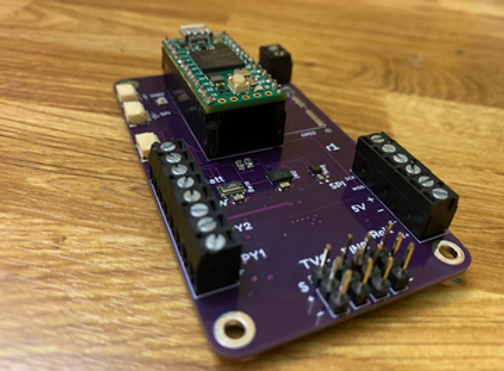
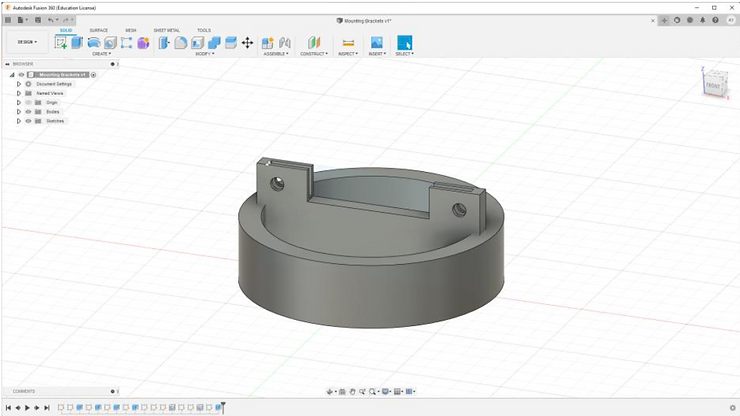

November 2021
Dev Log 4
Accomplishments in November 2021
Lots of progress was made this month.
To start with, I assembled the first TFAC PCB (Fig 1) which at first had some issues connecting to the SPI flash chip as the chip was not compatible with the library I was using and the library itself had some issues. With a change in the library and flash chip, TFAC works flawlessly!

A 3D printable mounting bracket (Fig 2) was also designed for TFAC, however the screw holes were off by a couple millimetres so the holes on TFAC and the holes on the mount didn’t quite match up. I intend to fix this in the next revision which should be designed and sent to the 3D Printing house in December.

I also wrote a driver in C++ for the barometer sensor on TFAC, which was a good learning experience. Most of November comprised of me writing/attempting to write TFAC’s flight software. Even though significant progress wasn’t made I would still consider it valuable. I am now a lot more comfortable working in the C++ environment and I know much more about interfacing with sensors, SPI devices, etc.
In the last week of November, I started learning about ‘Kalman Filter’. As the sensors I’m using on this flight computer are noisy cell phone grade sensors, which have a large error margin and will almost always have to be filtered in some way to get reliable data, an attempt to using a Kalman filter will be a great learning opportunity in the field of Math and Control Theory.
Several small changes were also made to the website.
Project Update - Goals for December 2021
In December I intend to have a good understanding of the theory behind a Kalman filter and also how to apply it to a real time system.
I also plan on finishing a significant portion of the flight software, should be having a lot of free time due to school holidays.
More changes to the website should also be done including a revamp of the home page and the addition of a few other things.
I will also be assembling the final TFAC board with the GNSS module that I hadn’t put on the current TFAC PCB, I hope to record some nice macro footage of me assembling this board for the YouTube video I plan on making which should be published by the end of December or early January (2022).